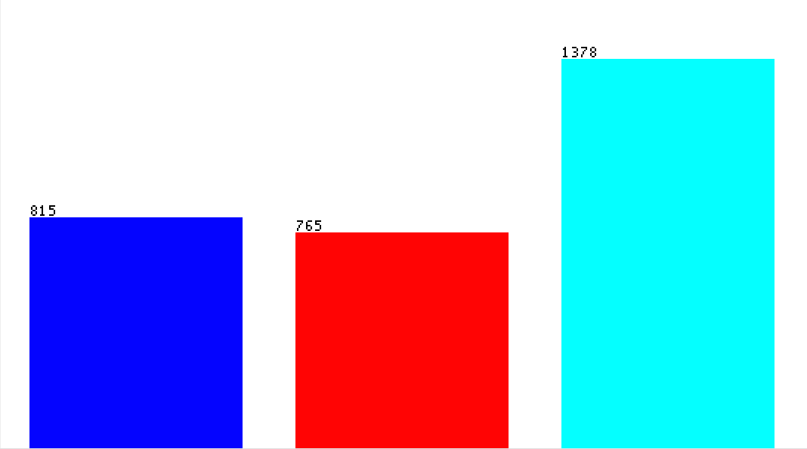
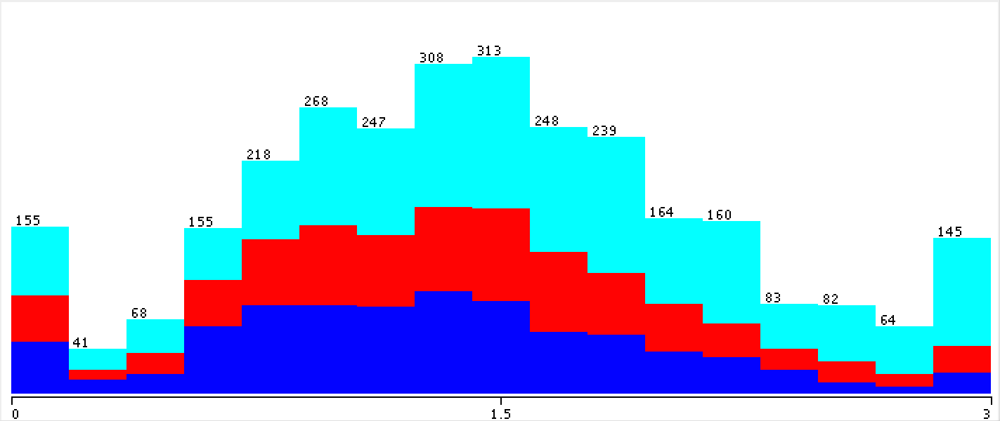
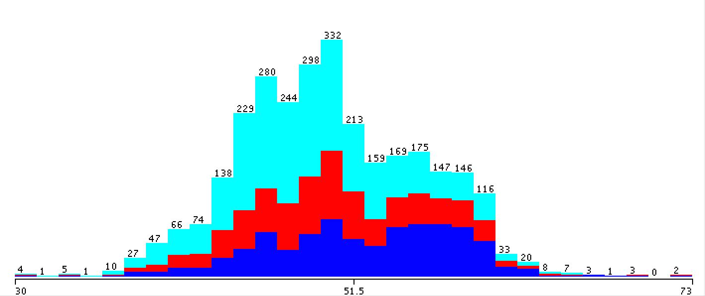

"Some people believe football is a matter of life and death...I can assure you it is much, much more important than that" - Bill Shankly
Across all corners of the globe, starry-eyed individuals gather together to chase after a ball hoping to replicate the moves they'd seen on TV or to bring to life whatever they'd imagined. We are all equal on the football pitch.Your technique does not depend on the color of your skin nor does your imagination depend on your socio-economic status; all else is irrelevant. It is for these reasons that football has become the Global Game and expanded to a multi-billion dollar industry. Despite this, there are very few solutions for predicting matches - even fewer which rely on data analysis. This intrigued us so we sought to find a way to merge data-analysis and match prediction.
The first step was gathering our data. Many insightful statistics are not published or recorded, so our data-collection was limited to only the following statistics for each match:
{Score, Shots, Shots on Goal, Fouls, Corner kicks, Offsides, Time of Possession, Yellow Cards, Red Cards, Saves}
Our task was now a matter of manipulating this data to optimize how much it can help us predict scores of matches. To help us, we created a 'Team' class which was instantiated for every team in the league and held long-term statistics (such as the following attributes) as well as a function to update the attributes after a match:
{TotalGamesPlayed, TotalNumPoints, LeagueStanding, AveragePosession, TotalGoalsScored, TotalGoalsConceded, GoalDifference, TotalShots, TotalShotsOnTarget, TotalShotsConceded, TotalShotsOnTargetConceded, TotalSaves, TotalSavesAgainst, TotalFoulsCommitted, TotalFoulsConceded, TotalCornersWon, TotalCornersConceded, TotalOffsidesFor, TotalOffsidesAgainst, TotalYellowCardsForOpponents, TotalRedCardsForOpponents, TotalYellowCards, TotalRedCards, HomeRecord, AwayRecord, Prev5Match, Prev5MatchEnumerated}
Manipulating our data involved storing ratios in our dataset as opposed to just the raw-data i.e. Yellow Cards/AveragePossession instead of solely Yellow Cards. This proved to be a good move as our machine was more accurate with these metrics than without.
As only the team's total statistics prior to the match day could have been relevant to match outcome, we stored the team's prior-to-the-match-attributes and the outcome of the match (Home Win, Draw, Away Win) in a dataset, before updating the Team object.
We did the aforementioned data-collection for 8 Premier League seasons (~3,040 matches).
Analysis on our data with 10-Fold Cross Validation revealed an average accuracy of 50% with the major ML algorithms such as Decision Trees, Random Forest, Bayes Nets, Multilayer Perceptrons, RBF Networks, and many more. Though the accuracy of these algorithms fluctuated within 5% either side of 50% (45-55%), some algorithms worked better than others. Unfortunately this improvement was not as great as we would have hoped. Using the Simple Logistic function built in to Weka, we were able to achieve 52.607% accuracy - though only slightly better than a 50% guess, it is a 19.277% improvement on the 1/3rd accuracy of random selection. This means that the ML algorithms learned from the features we passed, and that there is promise in the field of statistical analysis for match prediction. Moving forward we need to incorporate other statistics if we truly wish to model teams' playing styles and match-ups.
That said however, this exploration has revealed some vital elements including evidence to support the strength of the 'home field advantage', and that recent form can be just as important as quality in determining the outcomes of a match. Furthermore, it showed that teams that that like to keep possession have a lot better chances of winning away games than those that do not.

The breakdown of the results
{Away Win, Draw, Home Win}

Results based on Home Team Record at Home

Results based on Away Team Possession Percentage